Together, the HJB equation--written as (5.10) or (5.12)--and the Hamiltonian maximization condition (5.14) constitute necessary conditions for
optimality. It should be clear that all we proved so far is their
necessity. Indeed, defining  to be the value function, we
showed that it must satisfy the HJB equation.
Assuming further that an optimal control exists, we showed that it
must maximize the Hamiltonian along the optimal trajectory. However, we will see next that these conditions
are also sufficient for optimality.
Namely, we will establish the following sufficient condition for optimality: Suppose that
a
to be the value function, we
showed that it must satisfy the HJB equation.
Assuming further that an optimal control exists, we showed that it
must maximize the Hamiltonian along the optimal trajectory. However, we will see next that these conditions
are also sufficient for optimality.
Namely, we will establish the following sufficient condition for optimality: Suppose that
a
 function
function
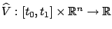
satisfies the HJB equation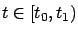
and all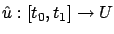
and the corresponding trajectory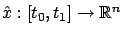
, with the given initial condition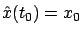
, satisfy everywhere the equation
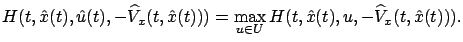
Then
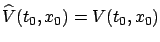
where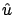
is an optimal control. (Note that this optimal control is not claimed to be unique; there can be multiple controls giving the same cost.)To prove this result, let us first apply (5.20) with
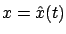
. We know from (5.22) that along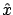
, the infimum is a minimum and it is achieved at ; hence we have, similarly to (5.13),
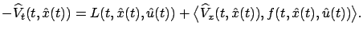
We can move the
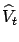
term to the right-hand side and note that together with the inner product of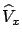
and
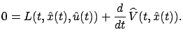
Integrating this equality with respect to
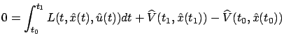
which, in view of the boundary condition for
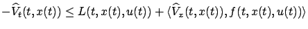
or
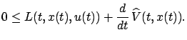
Integrating over
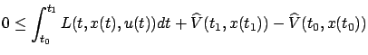
or
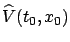
while no other controlWe can regard the function
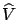
as providing a tool for verifying optimality of candidate optimal controls (obtained, for example, from the maximum principle). This optimality is automatically global. A simple modification of the above argument yields that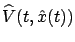
is the optimal cost-to-go from an arbitrary point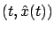
on the trajectory . More generally, since is defined for all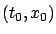
and obtain optimality with respect to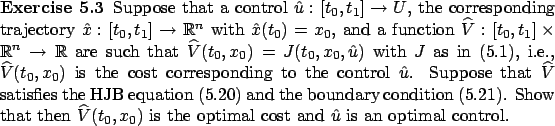
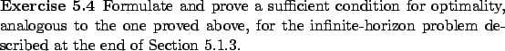